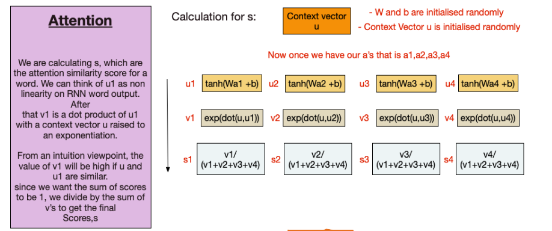

Notebook: Predicting Behaviour
Contents
Notebook: Predicting Behaviour¶
Data¶
Data provided is already preprocessed but needs to be converted in model usabale format
import torch
import pickle
import numpy as np
import pandas as pd
import torch.nn as nn
import matplotlib.pyplot as plt
from scipy.stats import spearmanr
from sklearn.preprocessing import MinMaxScaler
with open('HCP_movie_watching.pkl','rb') as f:
TS = pickle.load(f)
print(TS.keys())
dict_keys(['testretest', 'twomen', 'bridgeville', 'pockets', 'overcome', 'inception', 'socialnet', 'oceans', 'flower', 'hotel', 'garden', 'dreary', 'homealone', 'brokovich', 'starwars'])
for movie_name, ts in TS.items():
print(ts.shape)
(4, 176, 84, 300)
(176, 245, 300)
(176, 222, 300)
(176, 189, 300)
(176, 65, 300)
(176, 227, 300)
(176, 260, 300)
(176, 250, 300)
(176, 181, 300)
(176, 186, 300)
(176, 205, 300)
(176, 143, 300)
(176, 233, 300)
(176, 231, 300)
(176, 256, 300)
Behavioural Scores Normalization¶
with open('HCP_behavioral_scores.pkl','rb') as f:
TS1 = pickle.load(f)
print(TS1.keys())
Index(['Subject', 'PMAT24_A_CR', 'PicVocab_Unadj', 'NEOFAC_A', 'NEOFAC_O',
'NEOFAC_C', 'NEOFAC_N', 'NEOFAC_E'],
dtype='object')
scaler = MinMaxScaler()
dict_ = {}
for col,ts in TS1.items():
k = scaler.fit_transform(np.array(ts).reshape((-1,1))).reshape((-1,))
dict_[col] = k
df = pd.DataFrame.from_dict(dict_)
df
| Subject | PMAT24_A_CR | PicVocab_Unadj | NEOFAC_A | NEOFAC_O | NEOFAC_C | NEOFAC_N | NEOFAC_E | |
|---|---|---|---|---|---|---|---|---|
| 0 | 0.000000 | 1.000000 | 0.851851 | 0.375000 | 0.620690 | 0.612903 | 0.135135 | 0.000000 |
| 1 | 0.001901 | 0.823529 | 0.438968 | 0.291667 | 0.655172 | 0.677419 | 0.432432 | 0.387097 |
| 2 | 0.002466 | 0.647059 | 0.141904 | 0.583333 | 0.413793 | 0.483871 | 0.216216 | 0.516129 |
| 3 | 0.004255 | 1.000000 | 0.574822 | 0.708333 | 0.655172 | 0.903226 | 0.189189 | 0.322581 |
| 4 | 0.005939 | 0.941176 | 0.411379 | 0.375000 | 0.517241 | 0.419355 | 0.243243 | 0.548387 |
| ... | ... | ... | ... | ... | ... | ... | ... | ... |
| 171 | 0.951130 | 0.411765 | 0.354675 | 0.708333 | 0.586207 | 0.741935 | 0.405405 | 0.774194 |
| 172 | 0.959536 | 0.470588 | 0.490631 | 0.500000 | 0.482759 | 0.161290 | 0.540541 | 0.193548 |
| 173 | 0.968477 | 0.470588 | 0.134435 | 0.458333 | 0.344828 | 0.612903 | 0.540541 | 0.548387 |
| 174 | 0.973156 | 0.647059 | 0.681923 | 0.416667 | 0.724138 | 0.645161 | 0.756757 | 0.612903 |
| 175 | 1.000000 | 0.764706 | 0.230945 | 0.208333 | 0.517241 | 0.774194 | 0.432432 | 0.677419 |
176 rows × 8 columns
Dataset organization¶
TS is a dictionary with movie names as keys
Value against each key is a numpy array of dimensions [#participants, #time points, #ROIs]
Note that the testretest movie appears on all 4 runs for a participant, therefore the value has dimensions [#runs, #participants, #time points, #ROIs]
from torch.utils.data.sampler import SubsetRandomSampler
from torch.utils.data import TensorDataset, DataLoader, ConcatDataset
import random
def get_data(behav_score , movie, seq_length,shuffle=False):
rel = {}
l = 1
for score in df[behav_score]:
rel[l] = score
l += 1
train_feature = []
test_feature = []
train_target = []
test_target = []
for movie_name, ts in TS.items():
pep = 0
if movie_name == movie:
for i in ts:
pep += 1
if (pep <= 100):
if i.shape[0]>seq_length:
k = i[:seq_length][:]
train_feature.append(k)
train_target.append([rel[pep]])
k = i[i.shape[0]-seq_length:][:]
train_feature.append(k)
train_target.append([rel[pep]])
elif i.shape[0]<seq_length:
k = [[0]*300]*seq_length
k[seq_length-i.shape[0]:] = i
train_feature.append(k)
train_target.append([rel[pep]])
else:
if shuffle:
np.random.shuffle(i)
train_feature.append(i)
else:
train_feature.append(i)
train_target.append([rel[pep]]*seq_length)
else:
if i.shape[0]>seq_length:
k = i[:seq_length][:]
test_feature.append(k)
test_target.append([rel[pep]]*seq_length)
k = i[i.shape[0]-seq_length:][:]
test_feature.append(k)
test_target.append([rel[pep]]*seq_length)
elif i.shape[0]<seq_length:
k = [[0]*300]*seq_length
k[seq_length-i.shape[0]:] = i
test_feature.append(k)
test_target.append([rel[pep]]*seq_length)
else:
test_feature.append(i)
test_target.append([rel[pep]]*seq_length)
print(pep)
'''else:
for jj in ts:
pep = 0
for i in jj:
pep += 1
if (pep <= 100):
if i.shape[0]>seq_length:
k = i[:seq_length][:]
train_feature.append(k)
train_target.append(rel[pep])
k = i[i.shape[0]-seq_length:][:]
train_feature.append(k)
train_target.append(rel[pep])
elif i.shape[0]<seq_length:
k = [[0]*300]*seq_length
k[seq_length-i.shape[0]:] = i
train_feature.append(k)
train_target.append(rel[pep])
else:
train_feature.append(i)
train_target.append(rel[pep])
else:
if i.shape[0]>seq_length:
k = i[:seq_length][:]
test_feature.append(k)
test_target.append(rel[pep])
k = i[i.shape[0]-seq_length:][:]
test_feature.append(k)
test_target.append(rel[pep])
elif i.shape[0]<seq_length:
k = [[0]*300]*seq_length
k[seq_length-i.shape[0]:] = i
test_feature.append(k)
test_target.append(rel[pep])
else:
test_feature.append(i)
test_target.append(rel[pep])
print(pep)'''
train_data = TensorDataset(torch.from_numpy(np.array(train_feature)).float(),torch.from_numpy(np.array(train_target)).float())
test_data = TensorDataset(torch.from_numpy(np.array(test_feature)).float(),torch.from_numpy(np.array(test_target)).float())
batch_size = 15
valid_data = 0.30
t_train = len(train_data)
data_no = list(range(t_train))
np.random.shuffle(data_no)
split_no = int(np.ceil(valid_data*t_train))
train,valid = data_no[split_no:] + data_no[:5],data_no[:split_no]
train_sampler = SubsetRandomSampler(train)
valid_sampler = SubsetRandomSampler(valid)
train_loader = DataLoader(train_data,batch_size=batch_size,sampler=train_sampler)
valid_loader = DataLoader(train_data,sampler=valid_sampler,batch_size=batch_size)
test_loader = DataLoader(test_data, batch_size=batch_size)#,shuffle = True)
return train_loader,valid_loader,test_loader
Training, Validation, Test¶
With the data in required shape, The following shows the split into training, validation, and test sets.
batch_size = 15
shuffle = False
cols = ['PMAT24_A_CR','PicVocab_Unadj','NEOFAC_A','NEOFAC_O','NEOFAC_C','NEOFAC_E']
mov = ['testretest', 'twomen', 'bridgeville', 'pockets', 'overcome', 'inception', 'socialnet', 'oceans', 'flower', 'hotel', 'garden', 'dreary', 'homealone', 'brokovich', 'starwars']
movie = 'starwars'
seq_length = TS[movie].shape[1]
score = cols[0]#'PMAT24_A_CR'
train_loader,valid_loader,test_loader = get_data(score,movie,seq_length,shuffle)
176
len(train_loader),len(valid_loader),len(test_loader)
(5, 2, 6)
iter(train_loader).next()[0].shape
torch.Size([15, 256, 300])
is_cuda = torch.cuda.is_available()
if is_cuda:
device = torch.device("cuda")
else:
device = torch.device("cpu")
Models¶
Implementing the Attention Model¶
The following figures shows the idea behind it
class Attention(nn.Module):
def __init__(self, hidden_dim, seq_len, bias=False, **kwargs):
super(Attention, self).__init__(**kwargs)
self.supports_masking = True
self.bias = bias
self.hidden_dim = hidden_dim
self.seq_len = seq_len
weight = torch.zeros(hidden_dim, 1)
nn.init.kaiming_uniform_(weight)
context = torch.zeros(seq_len,seq_len)
nn.init.kaiming_uniform_(context)
self.context = nn.Parameter(context)
self.weight = nn.Parameter(weight)
if bias:
self.b = nn.Parameter(torch.zeros(seq_len))
def forward(self, x,mask=None):
#print(x.shape,x.contiguous().view(-1, self.hidden_dim).shape)
eij = torch.mm(x.contiguous().view(-1, self.hidden_dim ), self.weight).view(-1,self.seq_len)
if self.bias:
eij = eij + self.b
eij = torch.tanh(eij)
#print(eij.shape)
eij = torch.mm(eij,self.context)
#eij = torch.nn.functional.normalize(eij,p=2.5,dim=1)
a = torch.exp(eij)
if mask is not None:
a = a * mask
a = a / (torch.sum(a, 1, keepdim=True) + 1e-10)
weighted_input = x * torch.unsqueeze(a, -1)
#weighted_input = torch.nn.functional.normalize(weighted_input,p=2.5,dim=0)
#x = torch.sum(weighted_input, 2)
#x = x.view(batch_size,seq_length,1)
#print(torch.sum(weighted_input, 2).eq(weighted_input))
return weighted_input
GRU Classifier Model as described in the paper¶

class GRU_RNN(nn.Module):
def __init__(self, input_dim, output_dim,hidden_dim,seq_length,n_layers,att=True,drop_prob=0.000001):
super(GRU_RNN, self).__init__()
self.output_dim = output_dim
self.n_layers = n_layers
self.hidden_dim = hidden_dim
self.seq_length = seq_length
self.att = att
self.gru = nn.GRU(input_dim,hidden_dim,num_layers=n_layers,dropout=drop_prob,batch_first=True)
self.linear = nn.Linear(hidden_dim,output_dim)
if att:
self.attention = Attention(hidden_dim,seq_length)
self.dropout = nn.Dropout(0.3)
self.func = nn.Softmax(dim = -1)
def forward(self, x, hidden,encoder_x=0):
x,hidden = self.gru(x,hidden)
if self.att:
x = self.attention(x)
else:
x = x#[:, -1, :]
#x = self.dropout(x)
x = self.linear(x)
sig_out = x#self.func(x)
return sig_out, hidden
def init_hidden(self, batch_size):
weight = next(self.parameters()).data
hidden = weight.new(self.n_layers, batch_size, self.hidden_dim).zero_().to(device)
return hidden
Training¶
def train(epochs,train_loader,net,valid_loader,optimzer,criterion,att=True):
val_acc = []
tr_acc = []
clip = 4 # gradient clipping
net.to(device)
net.train()
valid_loss_min = np.Inf
valid_losses = []
train_losses = []
for e in range(epochs):
num_correct = 0
h = net.init_hidden(batch_size)
train_loss = []
valid_loss = []
train_acc = 0.0
valid_acc = 0.0
counter = 0
for inputs, labels in train_loader:
top_value = 0
counter += 1
#if counter == 65:
# continue
#print(labels)
inputs, labels = inputs.to(device), labels.to(device)
#print(labels)
h = h.data
net.zero_grad()
output, h = net(inputs, h)
#output = output[:, -1, :]
output = output.view(batch_size,-1)
#print(output.shape,labels.shape)#view(batch_size,-1)
#print(output[0])
#break
#pred = output#torch.round(output.squeeze())
#print(pred)
#top_value, top_index = torch.max(output,1)
#print(top_value)
#print(labels.shape)
#print(top_value, top_index)
correct_tensor = output.eq(labels.float())#.view_as(top_index))
correct = np.squeeze(correct_tensor.to('cpu').numpy())
num_correct += np.sum(correct)
loss = criterion(output, labels)
loss.backward()
nn.utils.clip_grad_norm_(net.parameters(), clip)
optimizer.step()
train_loss.append(loss.item())
tr_acc.append(num_correct/((len(train_loader)-1)*batch_size))
acc = 0.0
val_h = net.init_hidden(batch_size)
val_losses = []
net.eval()
num_correct = 0
v_c = 0
for inputs, labels in valid_loader:
top_value = 0
v_c += 1
if v_c==2:
continue
val_h = val_h.data
inputs, labels = inputs.to(device), labels.to(device)
output, val_h = net(inputs, val_h)
#pred = torch.round(output.squeeze())
#print(pred)
#top_value, top_index = torch.max(output,1)
output = output.view(batch_size,-1)
#output = output[:, -1, :]
#print(top_value.squeeze().shape,labels.shape)
correct_tensor = output.eq(labels.float())#.view_as(top_index))
correct = np.squeeze(correct_tensor.to('cpu').numpy())
num_correct += np.sum(correct)
val_loss = criterion(output,labels)
val_losses.append(val_loss.item())
if val_loss.item() <= valid_loss_min:
print('Validation loss decreased ({:.6f} --> {:.6f}). Saving model ...'.format(valid_loss_min, val_loss.item()))
best_epoch = e
if att:
torch.save(net.state_dict(), 'RNN_GRU_Att.pt')
else:
torch.save(net.state_dict(), 'RNN_GRU.pt')
valid_loss_min = val_loss.item()
net.train()
valid_losses.append(np.mean(val_losses))
train_losses.append(np.mean(train_loss))
val_acc.append(num_correct/(len(valid_loader)*batch_size))
print('Epoch: {}/{} \tTraining Loss: {:.6f} \tValidation Loss: {:.6f}'.format(e+1,epochs,np.mean(train_loss),np.mean(val_losses)))
return train_losses,valid_losses,tr_acc,val_acc,best_epoch
epochs = 50
input_dim = 300
hidden_dim = 32
output_dim = 1
n_layers = 2
lr = 0.001
Training with Attention Layer¶
model = GRU_RNN(input_dim, output_dim, hidden_dim, seq_length, n_layers)
optimizer = torch.optim.Adam(model.parameters(), lr=lr)
criterion = torch.nn.MSELoss()#nn.CrossEntropyLoss()
print(model)
GRU_RNN(
(gru): GRU(300, 32, num_layers=2, batch_first=True, dropout=1e-06)
(linear): Linear(in_features=32, out_features=1, bias=True)
(attention): Attention()
(dropout): Dropout(p=0.3, inplace=False)
(func): Softmax(dim=-1)
)
train_losses,valid_losses,tr_acc,val_acc,best_epoch = train(epochs,train_loader,model,valid_loader,optimizer,criterion)
Validation loss decreased (inf --> 0.257673). Saving model ...
Epoch: 1/50 Training Loss: 0.286488 Validation Loss: 0.257673
Epoch: 2/50 Training Loss: 0.280433 Validation Loss: 0.316165
Validation loss decreased (0.257673 --> 0.251178). Saving model ...
Epoch: 3/50 Training Loss: 0.274186 Validation Loss: 0.251178
Epoch: 4/50 Training Loss: 0.267696 Validation Loss: 0.297428
Epoch: 5/50 Training Loss: 0.261043 Validation Loss: 0.315165
Validation loss decreased (0.251178 --> 0.205194). Saving model ...
Epoch: 6/50 Training Loss: 0.254432 Validation Loss: 0.205194
Epoch: 7/50 Training Loss: 0.248019 Validation Loss: 0.273160
Epoch: 8/50 Training Loss: 0.241906 Validation Loss: 0.210738
Validation loss decreased (0.205194 --> 0.146092). Saving model ...
Epoch: 9/50 Training Loss: 0.236110 Validation Loss: 0.146092
Epoch: 10/50 Training Loss: 0.230786 Validation Loss: 0.192430
Epoch: 11/50 Training Loss: 0.225379 Validation Loss: 0.195375
Epoch: 12/50 Training Loss: 0.220217 Validation Loss: 0.180195
Epoch: 13/50 Training Loss: 0.215143 Validation Loss: 0.211803
Epoch: 14/50 Training Loss: 0.210270 Validation Loss: 0.188610
Epoch: 15/50 Training Loss: 0.205536 Validation Loss: 0.202779
Epoch: 16/50 Training Loss: 0.200807 Validation Loss: 0.212532
Epoch: 17/50 Training Loss: 0.196173 Validation Loss: 0.218790
Epoch: 18/50 Training Loss: 0.191852 Validation Loss: 0.197626
Epoch: 19/50 Training Loss: 0.187407 Validation Loss: 0.164204
Epoch: 20/50 Training Loss: 0.183197 Validation Loss: 0.159777
Epoch: 21/50 Training Loss: 0.179030 Validation Loss: 0.178199
Epoch: 22/50 Training Loss: 0.174925 Validation Loss: 0.188819
Validation loss decreased (0.146092 --> 0.142498). Saving model ...
Epoch: 23/50 Training Loss: 0.170952 Validation Loss: 0.142498
Validation loss decreased (0.142498 --> 0.092746). Saving model ...
Epoch: 24/50 Training Loss: 0.167033 Validation Loss: 0.092746
Epoch: 25/50 Training Loss: 0.163186 Validation Loss: 0.169806
Epoch: 26/50 Training Loss: 0.159561 Validation Loss: 0.209635
Epoch: 27/50 Training Loss: 0.155821 Validation Loss: 0.177396
Epoch: 28/50 Training Loss: 0.152250 Validation Loss: 0.131027
Epoch: 29/50 Training Loss: 0.148791 Validation Loss: 0.114624
Epoch: 30/50 Training Loss: 0.145360 Validation Loss: 0.161044
Epoch: 31/50 Training Loss: 0.142018 Validation Loss: 0.139625
Epoch: 32/50 Training Loss: 0.138715 Validation Loss: 0.133467
Epoch: 33/50 Training Loss: 0.135485 Validation Loss: 0.123082
Validation loss decreased (0.092746 --> 0.080021). Saving model ...
Epoch: 34/50 Training Loss: 0.132414 Validation Loss: 0.080021
Epoch: 35/50 Training Loss: 0.129426 Validation Loss: 0.125307
Epoch: 36/50 Training Loss: 0.126262 Validation Loss: 0.102738
Epoch: 37/50 Training Loss: 0.123493 Validation Loss: 0.141353
Epoch: 38/50 Training Loss: 0.120603 Validation Loss: 0.136588
Epoch: 39/50 Training Loss: 0.117775 Validation Loss: 0.137666
Epoch: 40/50 Training Loss: 0.115090 Validation Loss: 0.140739
Epoch: 41/50 Training Loss: 0.112334 Validation Loss: 0.136764
Epoch: 42/50 Training Loss: 0.109801 Validation Loss: 0.129736
Epoch: 43/50 Training Loss: 0.107244 Validation Loss: 0.124063
Epoch: 44/50 Training Loss: 0.104780 Validation Loss: 0.114008
Validation loss decreased (0.080021 --> 0.067614). Saving model ...
Epoch: 45/50 Training Loss: 0.102341 Validation Loss: 0.067614
Epoch: 46/50 Training Loss: 0.100035 Validation Loss: 0.147952
Epoch: 47/50 Training Loss: 0.097631 Validation Loss: 0.110288
Epoch: 48/50 Training Loss: 0.095388 Validation Loss: 0.133669
Epoch: 49/50 Training Loss: 0.093171 Validation Loss: 0.102219
Epoch: 50/50 Training Loss: 0.091158 Validation Loss: 0.070159
x = [i for i in range(1,epochs+1)]
xi = [i for i in range(0,epochs+5,5)]
xi[0] = 1
f = plt.figure()
f.set_figwidth(20)
f.set_figheight(5)
plt.plot(x,train_losses)
plt.plot(x,valid_losses)
plt.axvline(best_epoch, color='black')
plt.xlabel("Epochs",fontweight="bold",color = 'Black', fontsize='15', horizontalalignment='center')
plt.ylabel("Loss",fontweight="bold",color = 'Black', fontsize='15', horizontalalignment='center')
plt.title("Losses (with Attention)",fontweight='bold',color = 'Black', fontsize='15', horizontalalignment='center')
plt.legend(["Training Loss","Valid Loss",f"Best Epoch= {best_epoch}"])
plt.savefig(f"Losses {movie}_{score}_att.png",facecolor='white');
Training without Attention Layer¶
model = GRU_RNN(input_dim, output_dim, hidden_dim, seq_length, n_layers,att=False)
optimizer = torch.optim.Adam(model.parameters(), lr=lr)
criterion = nn.MSELoss()
print(model)
GRU_RNN(
(gru): GRU(300, 32, num_layers=2, batch_first=True, dropout=1e-06)
(linear): Linear(in_features=32, out_features=1, bias=True)
(dropout): Dropout(p=0.3, inplace=False)
(func): Softmax(dim=-1)
)
train_losses_1,valid_losses_1,tr_acc_1,val_acc_1,best_epoch = train(epochs,train_loader,model,valid_loader,optimizer,criterion,att=False)
Validation loss decreased (inf --> 0.167020). Saving model ...
Epoch: 1/50 Training Loss: 0.323667 Validation Loss: 0.167020
Validation loss decreased (0.167020 --> 0.099445). Saving model ...
Epoch: 2/50 Training Loss: 0.159237 Validation Loss: 0.099445
Validation loss decreased (0.099445 --> 0.063748). Saving model ...
Epoch: 3/50 Training Loss: 0.081085 Validation Loss: 0.063748
Epoch: 4/50 Training Loss: 0.057170 Validation Loss: 0.072026
Epoch: 5/50 Training Loss: 0.050083 Validation Loss: 0.067528
Epoch: 6/50 Training Loss: 0.040832 Validation Loss: 0.068751
Validation loss decreased (0.063748 --> 0.031609). Saving model ...
Epoch: 7/50 Training Loss: 0.034273 Validation Loss: 0.031609
Epoch: 8/50 Training Loss: 0.031803 Validation Loss: 0.051059
Epoch: 9/50 Training Loss: 0.029840 Validation Loss: 0.067352
Epoch: 10/50 Training Loss: 0.027361 Validation Loss: 0.049163
Epoch: 11/50 Training Loss: 0.025961 Validation Loss: 0.063297
Epoch: 12/50 Training Loss: 0.024705 Validation Loss: 0.045974
Validation loss decreased (0.031609 --> 0.028233). Saving model ...
Epoch: 13/50 Training Loss: 0.023546 Validation Loss: 0.028233
Epoch: 14/50 Training Loss: 0.022756 Validation Loss: 0.047366
Epoch: 15/50 Training Loss: 0.022124 Validation Loss: 0.048143
Epoch: 16/50 Training Loss: 0.021317 Validation Loss: 0.041395
Epoch: 17/50 Training Loss: 0.020788 Validation Loss: 0.056296
Epoch: 18/50 Training Loss: 0.020148 Validation Loss: 0.040662
Epoch: 19/50 Training Loss: 0.019668 Validation Loss: 0.060474
Epoch: 20/50 Training Loss: 0.019035 Validation Loss: 0.036490
Epoch: 21/50 Training Loss: 0.018451 Validation Loss: 0.050615
Epoch: 22/50 Training Loss: 0.017692 Validation Loss: 0.042593
Epoch: 23/50 Training Loss: 0.017361 Validation Loss: 0.036193
Epoch: 24/50 Training Loss: 0.016848 Validation Loss: 0.043882
Epoch: 25/50 Training Loss: 0.016398 Validation Loss: 0.048144
Validation loss decreased (0.028233 --> 0.022774). Saving model ...
Epoch: 26/50 Training Loss: 0.015820 Validation Loss: 0.022774
Epoch: 27/50 Training Loss: 0.015286 Validation Loss: 0.047615
Epoch: 28/50 Training Loss: 0.014578 Validation Loss: 0.032980
Epoch: 29/50 Training Loss: 0.014845 Validation Loss: 0.033604
Epoch: 30/50 Training Loss: 0.013680 Validation Loss: 0.054207
Epoch: 31/50 Training Loss: 0.013350 Validation Loss: 0.041292
Epoch: 32/50 Training Loss: 0.012615 Validation Loss: 0.049510
Epoch: 33/50 Training Loss: 0.012068 Validation Loss: 0.049801
Epoch: 34/50 Training Loss: 0.011644 Validation Loss: 0.051813
Epoch: 35/50 Training Loss: 0.011507 Validation Loss: 0.025887
Epoch: 36/50 Training Loss: 0.010915 Validation Loss: 0.068562
Epoch: 37/50 Training Loss: 0.010239 Validation Loss: 0.062498
Epoch: 38/50 Training Loss: 0.009942 Validation Loss: 0.051498
Epoch: 39/50 Training Loss: 0.009017 Validation Loss: 0.059416
Epoch: 40/50 Training Loss: 0.009033 Validation Loss: 0.044734
Epoch: 41/50 Training Loss: 0.008434 Validation Loss: 0.041929
Epoch: 42/50 Training Loss: 0.007863 Validation Loss: 0.029082
Epoch: 43/50 Training Loss: 0.007404 Validation Loss: 0.049933
Epoch: 44/50 Training Loss: 0.006944 Validation Loss: 0.063979
Epoch: 45/50 Training Loss: 0.006818 Validation Loss: 0.060668
Epoch: 46/50 Training Loss: 0.006422 Validation Loss: 0.076857
Epoch: 47/50 Training Loss: 0.006154 Validation Loss: 0.050200
Epoch: 48/50 Training Loss: 0.005820 Validation Loss: 0.045543
Epoch: 49/50 Training Loss: 0.005322 Validation Loss: 0.048257
Epoch: 50/50 Training Loss: 0.005149 Validation Loss: 0.046131
x = [i for i in range(1,epochs+1)]
xi = [i for i in range(0,epochs+5,5)]
f = plt.figure()
f.set_figwidth(18)
f.set_figheight(5)
plt.plot(x,train_losses_1)
plt.plot(x,valid_losses_1)
plt.axvline(best_epoch, color='black')
plt.xlabel("Epochs",fontweight="bold",color = 'Black', fontsize='15', horizontalalignment='center')
plt.ylabel("Loss",fontweight="bold",color = 'Black', fontsize='15', horizontalalignment='center')
plt.title(f"Losses (without Attention)",fontweight='bold',color = 'Black', fontsize='15', horizontalalignment='center')
plt.legend(["Training Loss","Valid Loss",f"Best Epoch= {best_epoch}"])
plt.savefig(f"Losses {movie}_{score}.png",facecolor='white');
Testing¶
def test(test_loader,net):
v_c = 0
net.to(device)
net.eval()
num_correct = 0
valid_acc = 0
out = []
l_all =[]
h = net.init_hidden(batch_size)
f = True
for inputs, labels in test_loader:
v_c += 1
if (v_c == 8):#12, #6, #8
continue
h = h.data
inputs, labels = inputs.to(device), labels.to(device)
#l_all.append(labels.cpu().detach().numpy())
output, h = net(inputs, h)
#print(output,labels)
#print(labels)
#pred = torch.round(output.squeeze())
output = output.view(batch_size,-1)
print(output.shape,labels.shape)
output = output.cpu().detach().numpy()
labels = labels.cpu().detach().numpy()
if f:
out = output
l_all = labels
f = False
else:
out = np.concatenate((out,output), axis=0)
l_all = np.concatenate((l_all,labels),axis=0)
return out,l_all
def get_scores(opt,lbl):
co = []
po = []
for i in range(lbl.shape[1]):
z = []
m = []
for j in range(lbl.shape[0]):
z.append(opt[j][i])
m.append(lbl[j][i])
coef, p = spearmanr(z,m)
co.append(coef)
po.append(p)
return co,po
#xa = DataLoader(ConcatDataset([train_data,test_data]),batch_size=batch_size)
#xa = test_loader
xa = [d for dl in [valid_loader, test_loader] for d in dl]
Prediction with Attention Layer¶
model = GRU_RNN(input_dim, output_dim, hidden_dim, seq_length, n_layers)
model.load_state_dict(torch.load('RNN_GRU_Att.pt'))
<All keys matched successfully>
out,l_all = test(xa,model)
torch.Size([15, 256]) torch.Size([15, 256])
torch.Size([15, 256]) torch.Size([15, 256])
torch.Size([15, 256]) torch.Size([15, 256])
torch.Size([15, 256]) torch.Size([15, 256])
torch.Size([15, 256]) torch.Size([15, 256])
torch.Size([15, 256]) torch.Size([15, 256])
torch.Size([15, 256]) torch.Size([15, 256])
coef, p_val = get_scores(out,l_all)
f = plt.figure()
f.set_figwidth(18)
f.set_figheight(8)
plt.plot([x for x in range(seq_length)],coef);
#plt.plot([x for x in range(seq_length)],coef1);
plt.axhline(y = max(coef), color = 'g', linestyle = '-')
plt.axhline(y = min(coef), color = 'r', linestyle = '-')
plt.ylim([min(coef)-0.05, max(coef)+0.05])
plt.grid()
plt.title(f"{score}: {movie}")
plt.xlabel("Time Points",fontweight="bold",color = 'Black', fontsize='15', horizontalalignment='center')
plt.ylabel("Spearman correlation",fontweight="bold",color = 'Black', fontsize='15', horizontalalignment='center')
plt.legend(["Predected Spearman",f"Max: {round(max(coef),4)}",f"Min: {round(min(coef),4)}"])
plt.savefig(f"Spearman {movie}_{score}_att_{shuffle}.png",facecolor='white');

f = plt.figure() f.set_figwidth(20) f.set_figheight(8) plt.plot([x for x in range(seq_length)],coef); plt.axhline(y = max(coef), color = ‘g’, linestyle = ‘-‘) plt.axhline(y = min(coef), color = ‘r’, linestyle = ‘-‘) plt.ylim(max(coef), min(coef));
Prediction without Attention Layer¶
model = GRU_RNN(input_dim, output_dim, hidden_dim, seq_length, n_layers,att=False)
model.load_state_dict(torch.load('RNN_GRU.pt'))
<All keys matched successfully>
out_1,l_all_1 = test(xa,model)
torch.Size([15, 256]) torch.Size([15, 256])
torch.Size([15, 256]) torch.Size([15, 256])
torch.Size([15, 256]) torch.Size([15, 256])
torch.Size([15, 256]) torch.Size([15, 256])
torch.Size([15, 256]) torch.Size([15, 256])
torch.Size([15, 256]) torch.Size([15, 256])
torch.Size([15, 256]) torch.Size([15, 256])
coef_1, p_val_1 = get_scores(out_1,l_all_1)
f = plt.figure()
f.set_figwidth(18)
f.set_figheight(8)
plt.plot([x for x in range(seq_length)],coef_1);
plt.axhline(y = max(coef_1), color = 'g', linestyle = '-')
plt.axhline(y = min(coef_1), color = 'r', linestyle = '-')
plt.ylim([min(coef_1)-0.05, max(coef_1)+0.05])
plt.title(f"{score}: {movie.capitalize()}")
plt.xlabel("Time Points",fontweight="bold",color = 'Black', fontsize='15', horizontalalignment='center')
plt.ylabel("Spearman correlation",fontweight="bold",color = 'Black', fontsize='15', horizontalalignment='center')
plt.legend(["Predected Spearman",f"Max: {round(max(coef),4)}",f"Min: {round(min(coef),4)}"])
plt.grid()
plt.legend(["Predected Spearman",f"Max: {round(max(coef_1),4)}",f"Min: {round(min(coef_1),4)}"])
plt.savefig(f"Spearman {movie}_{score}_{shuffle}.png",facecolor='white');